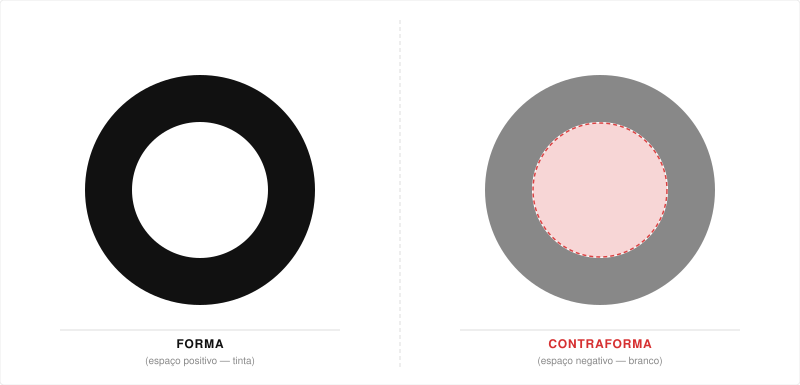
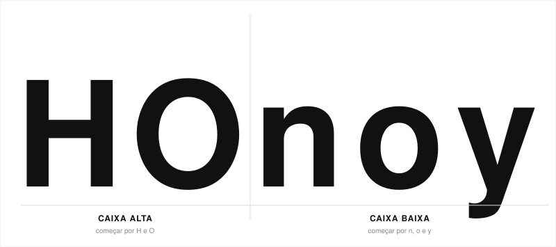
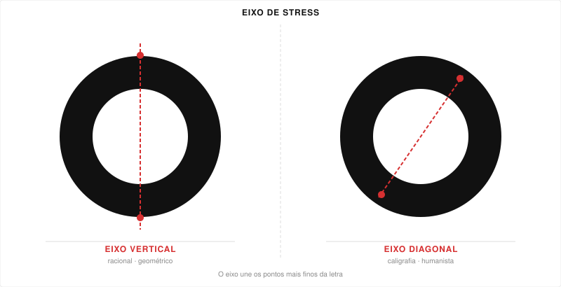
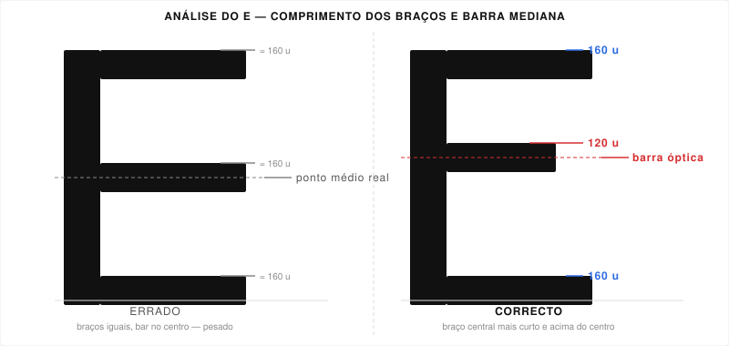
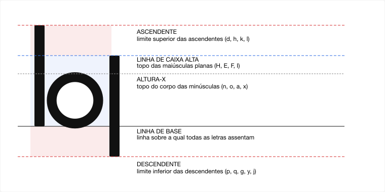
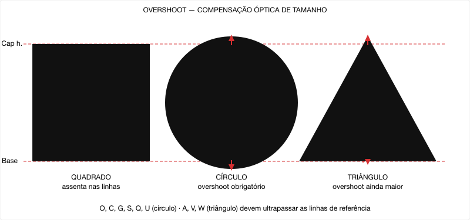
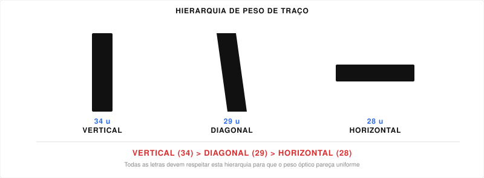
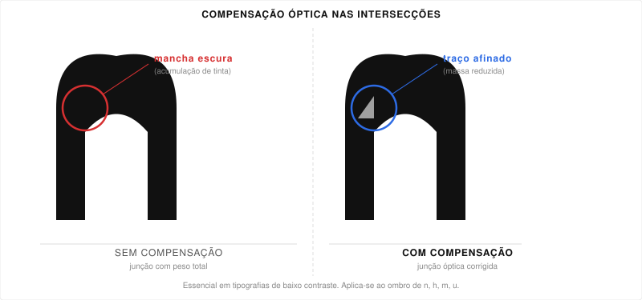
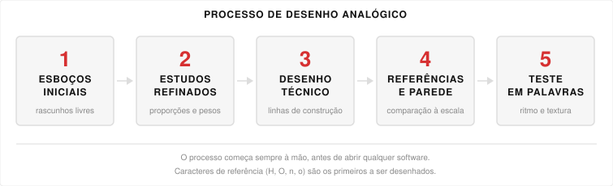

Cada forma de letra é composta por dois elementos inseparáveis: a forma (o próprio traço com tinta) e a contraforma (o espaço branco no interior e em redor). Um designer de tipos experiente presta igual atenção a ambos.
As três formas geométricas fundamentais — triângulo, quadrado e círculo — estão na base de todas as formas de letras. As letras A, H/O e O correspondem directamente a estas formas primárias. Compreender como estas formas definem a silhueta exterior de um glifo e o seu espaço branco interior é o primeiro passo no desenho de tipos.
Quando as letras são apresentadas como contornos, as contraformas tornam-se imediatamente visíveis e a sua relação com os traços positivos fica evidente. Estudar as formas de letras desta maneira treina o olho para ver o espaço negativo como um elemento desenhado, e não como uma mera ausência de tinta.
Colocar formas de letras em cores contrastantes (ou como camadas transparentes sobrepostas) revela de que forma os glifos adjacentes partilham e negoceiam o espaço. Esta abordagem, comum nos primeiros exercícios de design, obriga o designer a considerar a “textura” óptica que uma palavra ou linha de texto produz na página — e não apenas as formas individuais.
Conceito-chave: Uma letra bem desenhada é um equilíbrio entre a sua massa positiva e o seu espaço negativo. Ambos os lados do traço são desenhados simultaneamente na mente do designer.
Não se começa por desenhar o alfabeto inteiro. Em vez disso, escolhe-se um pequeno conjunto de caracteres de referência — letras que codificam as decisões fundamentais do design: peso do traço, eixo de stress, curvas, ângulos e proporções. Estas decisões propagam-se depois para todos os outros glifos da fonte.
Para caixa alta: começar com H e O. Para caixa baixa: começar com n, o e y.
Resolver estes cinco caracteres define, na essência, o sistema de design de toda a tipografia.

O H maiúsculo é o mais importante caractere de referência em caixa alta. Contém dois fustes verticais, uma barra transversal e contraformas abertas, e:
O I maiúsculo é utilizado a par do H para confirmar o peso do fuste sem a distracção de serifas ou barras transversais. Juntos, H e I estabelecem o ADN estrutural básico da caixa alta.
O O maiúsculo codifica as decisões mais importantes sobre o carácter de uma tipografia:
Uma linha vermelha a atravessar o O nos diagramas de análise indica a orientação do eixo.

O E maiúsculo é utilizado para definir:
O braço central do E é tipicamente desenhado ligeiramente mais curto do que os braços superior e inferior, e colocado ligeiramente acima do ponto médio matemático. Trata-se de uma correcção óptica: se os braços forem iguais e colocados no ponto médio real, a letra aparece mais pesada em baixo (ver Compensações Ópticas, §6).

O V maiúsculo estabelece o ângulo a que os traços diagonais se encontram, determinando directamente o design do A, W, X, K, M, N, Z e muitas outras letras. O V é também utilizado para estudar a relação entre a largura do traço diagonal e a dos traços verticais/horizontais. As diagonais devem normalmente ser desenhadas ligeiramente mais finas do que as verticais para aparentarem o mesmo peso.
Os seguintes caracteres foram sistematicamente desconstruídos no curso para mostrar de que forma cada um contribui com decisões estruturais únicas para o sistema de design.
O H é analisado em duas partes. Primeiro, os dois fustes verticais a preto são comparados com uma silhueta azul que mostra a mesma letra ligeiramente deslocada — isto revela as decisões de espaçamento interior (largura da contraforma). Segundo, a barra transversal é isolada para examinar o seu peso em relação aos fustes e a sua posição vertical precisa (situa-se no ponto médio óptico da altura de caixa alta, ou ligeiramente acima dele).
Ao sobrepor um E azul a um E preto e revelar progressivamente cada braço horizontal, o designer consegue ver como os três braços criam dois espaços de contraforma distintos. A contraforma superior deve ser ligeiramente menor do que a inferior — é o mesmo princípio óptico que se verifica no B, S, P e R.
O K é apresentado com a sua perna e braço diagonais realçados a azul, revelando como dois traços diagonais se encontram num fuste vertical. O ângulo e o peso de ambas as diagonais devem ser consistentes com os ângulos do V e do W estabelecidos anteriormente.
Estas letras são analisadas em conjunto como membros da família diagonal:
O X é a letra diagonal mais complexa. Dois cruzamentos de diagonais criam uma acumulação óptica de tinta no centro. O designer deve afinar os traços no ponto de cruzamento (ink trap / compensação óptica) para evitar uma mancha escura visível.
O O é apresentado em progressão: de um círculo monoline simples até à forma com contraste total de traço, inclinação de eixo e overshoot óptico em cima e em baixo (ver §6 para detalhes sobre o overshoot). O designer acompanha a transição de grosso para fino ao longo da curva.
O G é uma das letras mais específicas de cada tipografia. Contém um esporão (spur — a barra horizontal que fecha a contraforma aberta) e um braço curvo. Três zonas de design distintas são visíveis: a curva exterior, a contraforma interior e o mecanismo do esporão.
O D mostra como um fuste esquerdo recto transita para uma única curva ampla à direita. O peso da curva em cima e em baixo, comparado com o seu ponto mais fino (onde o eixo de stress intersecta), determina se a letra parece viva ou estática.
O B tem duas contraformas sobrepostas. A contraforma superior é sempre desenhada mais pequena do que a inferior, e a barra transversal (o horizontal que as divide) situa-se acima do ponto médio matemático — ambas são correcções ópticas (ver §6).
O S é anatomicamente a letra romana mais exigente. É composto por dois espaços de contraforma de orientação oposta, unidos por dois conjuntos de curvas em direcções opostas. O eixo de stress que atravessa o S difere de uma simples inclinação — ele curva.
o minúsculo: Estabelece os mesmos parâmetros que o O maiúsculo — eixo de stress, modulação do traço e tensão da curva — mas à altura-x. Os pontos terminais do o definem a espessura do filete e o estilo do terminal.
n minúsculo: Contém um fuste vertical, um arco e contraformas abertas na parte inferior. A união entre o fuste e o arco é uma decisão de design crítica: o ângulo e o peso da transição (o “ombro”) determina o carácter de todas as letras minúsculas arqueadas (h, m, r, u). O n também tem serifas no terminal superior esquerdo — o estilo de serifa aqui define todo o vocabulário de serifas.
y minúsculo: Contém dois ramos diagonais (definindo ângulos, consistentes com a família V maiúscula) e uma descendente. O y estabelece até que ponto as descendentes descem abaixo da linha de base e qual o tratamento dos seus terminais.
A partir das letras minúsculas, estabelecem-se cinco zonas horizontais:
| Zona | Descrição |
|---|---|
| Ascendente | A altura a que chegam as letras minúsculas altas (h, d, l, f, k) |
| Altura de caixa alta | A altura das maiúsculas de topo plano (H, E, F, I) |
| Altura-x | A altura do corpo das letras minúsculas (x, n, o, a) |
| Linha de base | A linha invisível sobre a qual assentam todas as letras |
| Descendente | A profundidade a que as letras (p, q, g, j, y) descem abaixo da linha de base |
As letras x, p, d, b, q apresentam em conjunto as cinco zonas simultaneamente e são o conjunto canónico para verificar as métricas verticais.

x (minúsculo): Confirma a altura-x e os ângulos diagonais.
p e b (minúsculos): Definem a proporção geral do bojo em relação ao fuste, estabelecem a forma das formas arqueadas e confirmam a altura das ascendentes.
f e t (minúsculos): Definem o estilo de terminal das ascendentes e descendentes — se a barra transversal do t é recta ou curva, se o topo do f curva para a esquerda ou tem uma serifa plana, e como termina a descendente do y. Círculos vermelhos nos slides assinalam os pontos de terminal exactos no f (topo), t (barra transversal) e y (descendente).
Um princípio fundamental: os traços de caixa alta são desenhados ligeiramente mais espessos do que os de caixa baixa. Se ambos forem desenhados com o mesmo peso físico, as maiúsculas parecerão mais leves — porque são mais altas, os seus traços abrangem uma área visual maior e a mesma espessura física aparenta ser mais fina.
Exemplo dos slides: o H tem traços verticais de 24 unidades e horizontais de 22 unidades; o h minúsculo tem fustes de 27 unidades e traços de 29 unidades. Estes valores diferem apenas por algumas unidades, mas são essenciais para que ambas as caixas pareçam visualmente iguais em peso.
Geometria e percepção divergem. Os designers de tipos têm de substituir constantemente as construções matematicamente correctas por construções opticamente correctas. Esta secção aborda as principais famílias de compensação óptica.
Quando um quadrado, um círculo e um triângulo são desenhados com a mesma altura de caixa de delimitação:
Isto tem consequências directas no design de formas de letras: letras redondas e triangulares devem ultrapassar as suas linhas de referência (overshoot) para parecerem ter a mesma altura que as letras de topo plano.
As letras redondas (O, C, S, Q, U, G) estendem-se ligeiramente acima da linha de caixa alta e ligeiramente abaixo da linha de base. As letras triangulares (A, V, W) estendem-se ligeiramente acima da linha de caixa alta e ligeiramente abaixo da linha de base no vértice.
Sem estes overshoot, letras como O, A e V parecem mais baixas do que H, E ou F, mesmo quando construídas dentro de uma caixa de delimitação idêntica.

Três formas de letras demonstram esta regra: O, I, V.
A regra é: traços verticais > traços diagonais > traços horizontais.
Isto deve-se ao facto de o olho perceber os traços horizontais como ligeiramente mais pesados do que os verticais de igual largura física (abrangem toda a largura visível de um traço). Os horizontais devem portanto ser desenhados mais finos para parecerem iguais.

Dois círculos desenhados com raios interior e exterior matematicamente idênticos (um O concêntrico perfeito) parecem irregulares. O arco superior parece mais fino do que o inferior devido à forma como o olho percorre a letra.
A solução: o O deve ter larguras de traço horizontal e vertical ligeiramente diferentes, seguindo o modelo de stress estabelecido pela pena de ponta larga caligráfica. Nos slides, o O correcto tem um traço horizontal de 28 unidades e um traço vertical de 35 unidades (exterior). O O concêntrico “imperfeito” tem traços iguais de 31 unidades em todo o contorno — parece circular, mas sente-se errado como letra.
No ponto onde dois traços se unem (o ombro do n, a junção do arco em h, m, u), a tinta parece acumular-se visualmente, criando uma mancha escura. Isto é especialmente visível em tipografias de baixo contraste (sem serifas, designs monoline).
A correcção: afinar ligeiramente os traços no ponto de junção, retirando uma pequena quantidade de massa da intersecção. Os dois n presentes no slide demonstram isto — o n da esquerda tem uma junção de peso total e parece mais pesado nesse ponto; o n da direita foi corrigido e o valor de cinzento uniformiza-se.

O olho humano percebe a metade superior de uma letra como maior do que a metade inferior, mesmo quando ambas são geometricamente iguais. Isto significa que:
O slide que mostra dois D lado a lado demonstra isto com medições: a contraforma superior parece ocupar mais espaço do que a inferior, mesmo quando as duas metades são construídas de forma idêntica.
Como os topos das letras do alfabeto latino têm formas mais distintivas do que as partes inferiores, os leitores identificam as palavras principalmente através da sua silhueta superior. O slide demonstra isto mostrando palavras com a metade superior mascarada (mais difícil de ler) em comparação com a metade inferior mascarada (mais fácil de ler).
É por isso que as descendentes e as pequenas variações na parte inferior das letras são menos críticas para a legibilidade do que as ascendentes e os perfis superiores da zona de altura-x.
As serifas esquerda e direita de letras como I, H, L e T não precisam de ser idênticas. O equilíbrio visual pode ser alcançado através de serifas assimétricas — o ângulo, o comprimento e a curvatura exactos de cada lado podem diferir ligeiramente para contrariar a assimetria da forma como as letras assentam junto às suas vizinhas.
A serifa do lado esquerdo deve ser ligeiramente mais curta do que a do lado direito para as serifas de linha de base em letras como h, n, m, u, i, l. As medições dos slides mostram uma diferença de aproximadamente 76 unidades (esquerda) contra 84 unidades (direita). Esta ligeira assimetria compensa o fluxo óptico da leitura da esquerda para a direita: a serifa direita deve conduzir o olhar do leitor para a letra seguinte.
“O instrumento tipográfico, seja ele um computador ou uma régua de composição, funciona como um tear. O tipógrafo procura tecer o texto de maneira mais homogénea possível. Do mesmo modo, os bons tipos são desenhados para produzir uma textura vivaz e homogénea, mas o espaçamento descuidado de letras, linhas e palavras pode rasgar esse tecido.” — Robert Bringhurst, Elementos do Estilo Tipográfico (2005)
O espaçamento não é um detalhe de última hora — é parte integrante do design.
O tracking refere-se a um aumento ou diminuição uniforme do espaço aplicado a um intervalo de caracteres. O seu efeito é global: altera a densidade e a cor de mancha de um bloco de texto.
Os slides mostram três versões do mesmo trecho — a cor-de-rosa (tracking apertado), azul (tracking normal) e novamente a cor-de-rosa (tracking largo) — para demonstrar como as mesmas palavras podem parecer comprimidas ou arejadas dependendo deste único parâmetro.
O kerning ajusta o espaço entre pares específicos de letras. Os valores de sidebearing predefinidos incorporados na fonte são concebidos para a maioria das combinações, mas certos pares requerem atenção especial.
Regras gerais:

A palavra “WAIVE” no slide ilustra isto: os pares W–A e A–I têm kerning apertado (diagonal–diagonal), enquanto I–V necessita de um tratamento diferente porque o V introduz nova tensão diagonal.
A palavra “exemplo” está anotada com barras vermelhas em pares de letras específicos, mostrando onde se aplicam excepções de kerning com base na geometria das formas.
As duas letras A e W colocadas juntas demonstram o cenário de kerning mais apertado do alfabeto latino: duas letras compostas inteiramente por diagonais que se encontram com ângulos complementares. O slide mostra linhas de medição acima de ambas as letras na altura de caixa alta e na linha de base, com o par posicionado de modo a que o espaço visual entre elas corresponda ao espaço branco interno de cada letra — o objectivo do designer para todo o espaçamento.
Antes de se abrir qualquer software, uma tipografia começa por ser desenhada à mão.

Os desenhos iniciais são soltos, exploratórios e pequenos. O designer testa múltiplas direcções rapidamente no papel, capturando a energia gestual das letras sem se comprometer com medidas específicas. Os caracteres de referência (H, O, n, o) são as primeiras marcas feitas.
Os conceitos seleccionados são desenhados a maior escala, com mais atenção às proporções, larguras dos traços e tensão das curvas. O lápis ou a caneta é utilizado para estudar letras individuais em isolamento, depois em pares e em palavras curtas.
A direcção mais promissora é desenhada com linhas de construção completas: linha de base, altura-x, altura de caixa alta, ascendente e descendente são traçadas com régua. As larguras dos traços são medidas e marcadas. A hachura ou sombreado é adicionado para compreender a distribuição da massa visual. Nesta fase, os desenhos começam a assemelhar-se ao que um scanner ou uma câmara pode entregar para digitalização vectorial.
Espécimens impressos, fotocópias de tipos históricos e provas de impressão são afixados numa parede para comparação. O designer afasta-se para avaliar o alfabeto completo de uma só vez, avaliando consistência, ritmo e cor de mancha. As letras são comparadas lado a lado em diferentes escalas.
Palavras completas são compostas — tipicamente sequências de texto concebidas para expor pares problemáticos, como “theory”, “thnoy” ou “minimum” — e avaliadas quanto ao ritmo de espaçamento, consistência das contraformas e textura geral.
Cada tipografia é desenhada sobre uma grelha consistente de cinco linhas de referência horizontais. Estas linhas são definidas uma vez e depois governam cada glifo na fonte.
| Linha | Nome | Descrição |
|---|---|---|
| Superior | Linha de ascendente | Limite superior das letras ascendentes (d, h, k, l) |
| Segunda | Altura de caixa alta | Topo das maiúsculas de topo plano (H, E, F, I) |
| Intermédia | Altura-x | Topo do corpo das minúsculas (n, o, a, x) |
| Quarta | Linha de base | A linha sobre a qual todas as letras assentam |
| Inferior | Linha de descendente | Limite inferior das letras descendentes (p, q, g, y, j) |
As letras p, d, l, b, q apresentam em conjunto as cinco zonas numa única sequência, tornando-se o conjunto de teste padrão para as métricas verticais.
As letras redondas ultrapassam ligeiramente a altura de caixa alta, a linha de base e a altura-x, acima e abaixo destas linhas (ver §6.1). As letras de topo plano assentam precisamente sobre elas.
| Princípio | Regra |
|---|---|
| Começar pelos caracteres de referência | Caixa alta: H, O. Caixa baixa: n, o, y |
| Hierarquia de peso de traço | Vertical > diagonal > horizontal |
| Overshoot para formas redondas e triangulares | O, C, G, A, V, W ultrapassam as linhas de referência |
| Contraforma superior < contraforma inferior | Aplica-se ao B, E, S, P, R e equivalentes em minúscula |
| Letras diagonais têm kerning mais apertado | AV, AW, TA mais próximas do que II, HH |
| Traços de caixa alta mais espessos do que os de caixa baixa | O mesmo peso parece mais leve em alturas de caixa maiores |
| Compensação nas intersecções | Afinar traços nas junções para evitar acumulação de mancha escura |
| Serifa esquerda ligeiramente mais curta do que a direita | Suporta a direcção de leitura (da esquerda para a direita) |
| Geometria perfeita ≠ letra perfeita | Corrigir sempre opticamente as formas matematicamente iguais |
| Forma e contraforma são inseparáveis | Desenhar simultaneamente ambos os lados de cada traço |
Slides e material de curso: Nuno F. Martins — Tipografia II, Universidade do Algarve. Referência: Bringhurst, R. (2005). Elementos do estilo tipográfico. Cosac Naify.